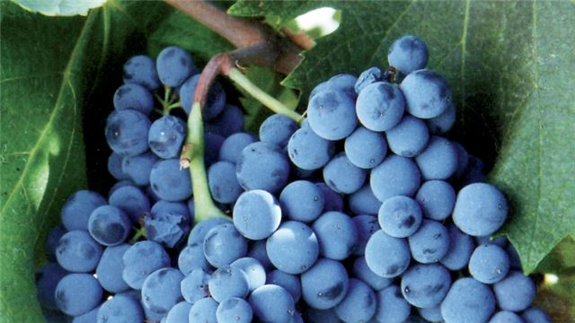
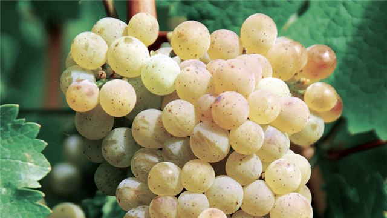

Viveiros Plansel · Montemor-o-Novo · Alentejo
Des plants pour un vignoble réussi.
Plants greffés issus des meilleurs cépages portugais. Certifiés et élevés dans notre propre pépinière en Alentejo.
Viveiros Plansel fait partie du Plansel Group : vins, événements et savoir

- 1975Premières vignes à Montemor-o-Novo
- ~50 %des plants certifiés du Portugal issus de clones Plansel*
- 50+ans de sélection clonale de cépages portugais
- 12cépages au programme, plus porte-greffes et raisins de table
- 100 %matériel végétal certifié
* Chiffre de la société Plansel, cité par Vinetur, 9 nov. 2026
 Viveiros01
Viveiros01
Ce que nous proposons
De la vigne à l'olivier.
Découvrez Viveiros Plansel et tout ce que nous proposons aux viticulteurs et oléiculteurs.
 01PépinièrePlants greffés, issus des meilleurs cépages portugais.
01PépinièrePlants greffés, issus des meilleurs cépages portugais. 02Cépages et porte-greffesL'histoire des cépages et porte-greffes que nous multiplions.
02Cépages et porte-greffesL'histoire des cépages et porte-greffes que nous multiplions. 03OliviersNos variétés d'olivier et leur évolution technique et scientifique.
03OliviersNos variétés d'olivier et leur évolution technique et scientifique. 04Services et produitsServices et produits pour la vigne et l'oliveraie, sur demande.
04Services et produitsServices et produits pour la vigne et l'oliveraie, sur demande.
 Comment tout a commencé02
Comment tout a commencé02
Comment tout a commencé
Une pépinière qui a changé le Portugal.
Après l'achat de la Quinta de S. Jorge à Montemor-o-Novo, Jorge Böhm, allemand de naissance et profondément attaché au Portugal, fonde l'entreprise Plansel.
Elle s'est développée avec la pépinière, surtout avec les plants greffés, alors pratiquement inconnus au Portugal. Plus tard s'est ajoutée la multiplication d'oliviers par boutures semi-ligneuses.

 Production03
Production03
Le parcours d'un plant
Du bois au plant prêt à planter, en huit étapes.
De la taille à l'expédition, chaque matériel reste étiqueté par cépage, clone et catégorie de certification.
- 01Couper les porte-greffes
Les porte-greffes sont coupés au champ, triés par calibre, éborgnés à la machine, liés en bottes de 200 sarments et désinfectés.
- 02Récolter les greffons
Le bois des cépages est coupé au champ, mis en bottes, étiqueté et séparé par clone et catégorie de certification.
- 03Stockage au froid
En chambre froide, à humidité et température contrôlées.
- 04Greffage
Du personnel qualifié greffe sur table ; la machine réalise la coupe en oméga.
- 05Stratification
Dans des caisses de tourbe, porte-greffe et greffon se soudent dans une chambre chaude et humide.
- 06Pépinière au champ
Les plants poussent au champ jusqu'à l'automne ou l'hiver. Plansel et les services officiels contrôlent cépage et santé.
- 07Tri et paraffinage
Chaque plant est contrôlé selon les normes légales, ses racines sont taillées, puis il est paraffiné, compté et stocké en local climatisé.
- 08Expédition et plantation
En cartons doublés de plastique contre le dessèchement. Avant la plantation, les racines sont taillées ; on plante à la main ou à la machine.
Certification
Tout le matériel végétal est certifié.
Nous vendons dans la catégorie « certifié », reconnaissable à l'étiquette bleue. Le matériel de nos champs de pieds-mères va à notre pépinière, aux viticulteurs et à d'autres pépiniéristes.
 Cépages04
Cépages04
Viticultura
Les cépages que nous multiplions.
Cépages portugais issus de la sélection clonale de Plansel.
- Touriga NacionalCépage rouge
 Touriga FrancaCépage rouge
Touriga FrancaCépage rouge TrincadeiraCépage rouge
TrincadeiraCépage rouge AragonezCépage rouge
AragonezCépage rouge
Tinta BarrocaCépage rouge CastelãoCépage rouge
CastelãoCépage rouge ArintoCépage blanc
ArintoCépage blanc Antão VazCépage blanc
Antão VazCépage blanc LoureiroCépage blanc
LoureiroCépage blanc GouveioCépage blanc
GouveioCépage blanc
ViosinhoCépage blanc- Photo à venirAlvarinhoCépage blanc
Raisins de table, porte-greffes, clones et quantités : sur demande.
 Olivicultura05
Olivicultura05
Olivicultura
Les oliviers aussi viennent de notre pépinière.
Nous multiplions des variétés d'olivier par boutures semi-ligneuses et suivons leur évolution technique et scientifique.
 Contact06
Contact06
Commander des plants
Des questions ? Écrivez-nous.
Indiquez-nous cépages, clones, porte-greffes et quantités. Nous répondons avec disponibilités et offre.
- Adresse
- Viveiros Plansel, Quinta de São Jorge
Estrada Municipal 537, Porto das Lãs
7050-203 Montemor-o-Novo, Portugal - viveiros@plansel.com
- Téléphone
- +351 266 899 260
Appel vers un fixe portugais - Suivre
- Instagram · Facebook